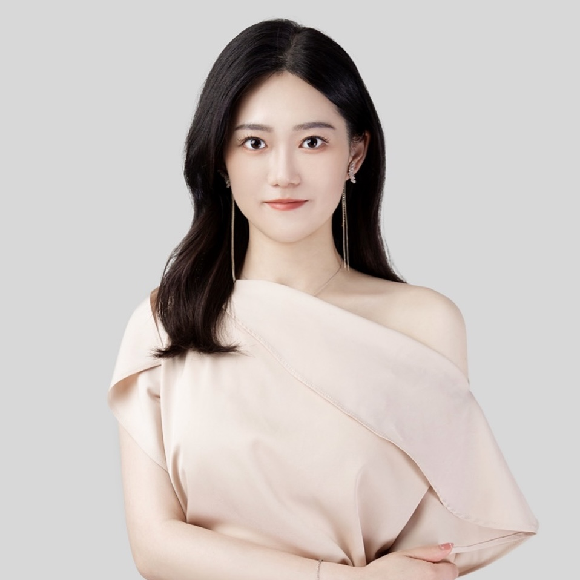

通訳予約

西西
女性 | 中国 | 20代 & 30代 | 来日12年目
言語能力
日本語 - 中国語 (日本語N1ネイティブレベル, 中国語ネイティブレベル)
経歴
早稲田大学経営管理研究科（MBA課程）卒業
通訳経験10年 | 美容医療・人間ドック・再生医療・疾病治療など
サービス料金 & 利用可能時間
土日祝 ALL day | 平日 10~12時、16~20時 | 10000円/h (20%手数料)
自己紹介
私はインバウンド業界で10年以上、3000人以上の個人観光客に接客してきました。これまでの経験から、お客様のニーズに合わせて医療関係の通訳を数多く行ってきました。通訳の専門性に加えて、日本の医療システムに対する深い理解を持ち、通訳だけでなく、日本語医療ツーリズムサービスに関する相談にも対応できます。通訳中も、日本の医療情報や観光情報を豊富に提供し、患者さんが安心して医療サービスを受けられるよう努めています。